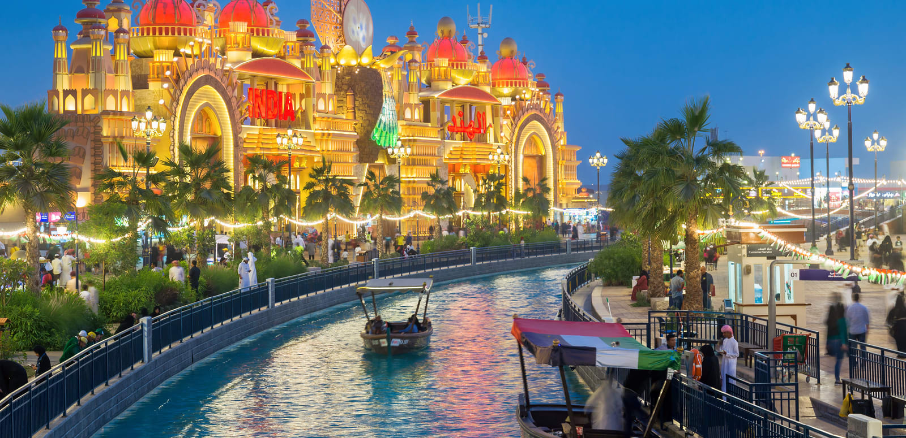

Dubai with its ambitious construction projects have transformed itself so much that it tops almost every travelers’ bucket list. If you are a travel enthusiast, you definitely cannot miss out on visiting this desert beauty. Not only the magnificent architecture, but Dubai has a lot more to offer, especially if you are an adventure traveler you can go for skydiving in Dubai.Besides all this, there is much more that this city has to offer to an one way ticketer like me.
Its also holds up the balance of fun with sophistication on several levels.Cultural,emotional,classical as well as the modern schools of thought are each rooted deep in the air of this city.The amazing
Read more...
After spending about 15 days exploring this city, I sure as hell better be able to give you some kind of Mysore guide! If this city taught me anything, it’s that even 15 days isn’t long enough to see this “royal” city and learn about it’s past. Actually, I’ve learned so much if I don’t share it all with you, my head might explode. Here are my top list of things to do in Mysore you do NOT want to miss!They are Read more...